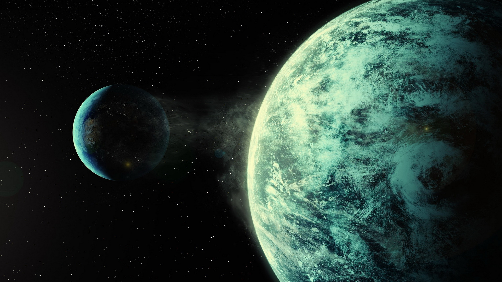
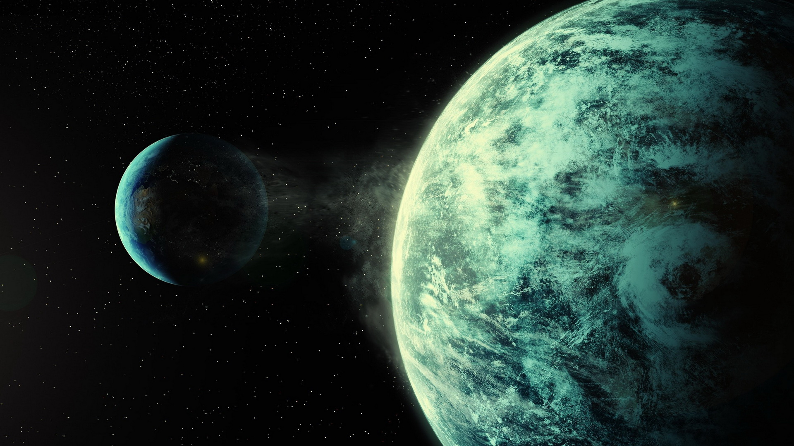

Você sabe o que é uma Galáxia?
Galáxia é uma enorme estrutura no espaço, composta por bilhões de estrelas, gás, poeira e matéria escura, unidas pela gravidade.

Galáxia Andrômeda
Galáxia é uma enorme estrutura no espaço, composta por bilhões de estrelas, gás, poeira e matéria escura, unidas pela gravidade.
Galáxia Andrômeda
As galáxias podem ter diferentes formas e com isso, são classificadas com base em sua aparência. As classificações são:
| Nome | Tipo | Localização |
|---|---|---|
| Andrômeda | Espiral | 2,5 milhões de anos luz |
| Centaurus A | Elíptica | 12 milhões de anos luz |
| NGC 1427A | Irregular | 62 milhões de anos luz |
 


Galáxia Centaurus A
Galáxia NGC 1427A
Para mais informações acesse:
Galáxias, o que são e como são formadas?